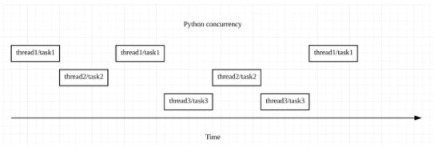
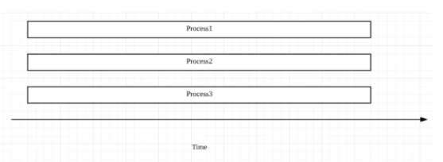
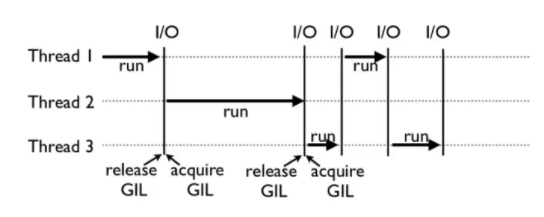
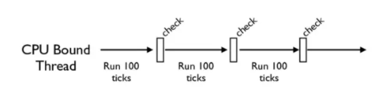

进阶篇
对象的比较、拷贝
‘==’ VS ‘is’
'=='操作符比较对象之间的值是否相等，表示比较变量 a 和 b 所指向的值是否相等。
而’is’操作符比较的是对象的身份标识是否相等，即它们是否是同一个对象，是否指向同一个内存地址。
在 Python 中，每个对象的身份标识，都能通过函数 id(object) 获得。因此，'is’操作符，相当于比较对象之间的 ID 是否相等
当我们比较一个变量与一个单例（singleton）时，通常会使用’is’。一个典型的例子，就是检查一个变量是否为 None
比较操作符’is’的速度效率，通常要优于’==‘。
因为’is’操作符不能被重载，这样，Python 就不需要去寻找，程序中是否有其他地方重载了比较操作符，并去调用。
执行比较操作符’is’，就仅仅是比较两个变量的 ID 而已。但是’=='操作符却不同，执行a == b相当于是去执行a.eq(b) ，而 Python 大部分的数据类型都会去重载__eq__这个函数
深拷贝和浅拷贝
浅拷贝copy.copy()，是指重新分配一块内存，创建一个新的对象，里面的元素是原对象中子对象的引用。因此，如果原对象中的元素不可变，那倒无所谓；但如果元素可变，浅拷贝通常会带来一些副作用。两份东西会同时改变。
深拷贝copy.deepcopy()，是指重新分配一块内存，创建一个新的对象，并且将原对象中的元素，以递归的方式，通过创建新的子对象拷贝到新对象中。因此，新对象和原对象没有任何关联。
1 | # 深拷贝源码 |
参数如何传递
值传递和引用传递
值传递：所谓值传递，通常就是拷贝参数的值，然后传递给函数里的新变量。这样，原变量和新变量之间互相独立，互不影响。
引用传递：通常是指把参数的引用传给新的变量，这样，原变量和新变量就会指向同一块内存地址。如果改变了其中任何一个变量的值，那么另外一个变量也会相应地随之改变。
1 | # 参数是赋值传递 |
装饰器
所谓的装饰器，其实就是通过装饰器函数，来修改原函数的一些功能，使得原函数不需要修改。
装饰器把真正要执行的函数包裹在里面，并改变了它。
1 | #简单的装饰器 |
带有参数的装饰器
1 | def my_decorator(func): |
带有两个参数的装饰器，（*args, **kwargs），表示可以传入任意参数
1 | def my_decorator(func): |
带有自定义参数的装饰器
1 | # 参数定义在def处 |
类装饰器
类装饰器主要依赖于函数__call__()，每当你调用一个类的示例时，函数__call__()就会被执行一次
1 | # 定义一个类 |
装饰器的嵌套
简单的看法只看装饰函数中的wrapper，其他都是固定格式
1 |
|
装饰器的应用
实际工作中，装饰器通常运用在身份认证、日志记录、输入合理性检查以及缓存等多个领域中。合理使用装饰器，往往能极大地提高程序的可读性以及运行效率。
让你的代码达到高度抽象，分离和简化
例身份认证：
1 | import functools |
迭代器和生成器
可迭代对象，通过 iter() 函数返回一个迭代器，再通过 next() 函数就可以实现遍历。for in 语句将这个过程隐式化
生成器是懒人版的迭代器
生成器并不会像迭代器一样占用大量内存，只有在被使用的时候才会调用。而且生成器在初始化的时候，并不需要运行一次生成操作
1 |
|
python协程
协程是实现并发编程的一种方式
协程是单线程
协程由用户决定，在哪些地方交出控制权，切换到下一任务
写协程程序的时候要有清晰的事件循环概念，知道程序在什么时候需要暂停、等待I/O，什么时候执行到底
asyncio工具
用async修饰词声明异步函数，调用异步函数就可以得到一个协程对象，把函数变成了一个协程对象，如果print会输出<coroutine object crawl_page at 0x000002BEDF141148>
协程的执行：
一、await
函数自上而下运行，运行到await函数时暂停，然后开始运行await后面的函数，等待 await后面的函数执行完，接着继续执行自己的函数
二、asyncio.create_task()
三、asyncio.run()
python多线程与多进程
CPU密集型任务（指会消耗大量CPU资源的任务）多线程无效，选择多进程，线程切换带来额外损耗，还会降低效率
I/O密集型任务，大多数时间浪费在I/O等待上，加速首先选用多线程或Asyncio，多进程也可以但是没有必要
多线程与Asyncio
多线程有诸多优点且应用广泛，但也存在一定的局限性：
比如，多线程运行过程容易被打断，因此有可能出现 race condition 的情况；
再如，线程切换本身存在一定的损耗，线程数不能无限增加，因此，如果你的 I/O 操作非常 heavy，多线程很有可能满足不了高效率、高质量的需求。正是为了解决这些问题，Asyncio 应运而生。
Python并发编程之Futures
并发与并行
并发
python的并发一个时刻只允许有一个操作发生

Python 中并发有两种形式——threading 和 asyncio
threading，操作系统知道每个线程的所有信息，因此它会做主在适当的时候做线程切换。
代码容易书写，程序员不需要做任何切换操作的处理；
但是切换线程的操作，也有可能出现在一个语句执行的过程中（比如 x += 1），这样就容易出现 race condition 的情况
asyncio，主程序想要切换任务时，必须得到此任务可以被切换的通知
并行
并行指的是同一时刻同时发生。Python 中的 multi-processing 便是这个意思

对比
并发通常应用于 I/O 操作频繁的场景，比如你要从网站上下载多个文件，I/O 操作的时间可能会比 CPU 运行处理的时间长得多。
而并行则更多应用于 CPU heavy 的场景，比如 MapReduce 中的并行计算，为了加快运行速度，一般会用多台机器、多个处理器来完成。
并发编程之 Futures
Futures 会将处于等待状态的操作包裹起来放到队列中，这些操作的状态随时可以查询
单线程与多线程
1 | # 创建一个线程池，分配使用 |
Asyncio
sync与Async
所谓 Sync，是指操作一个接一个地执行，下一个操作必须等上一个操作完成后才能执行。
而 Async 是指不同操作间可以相互交替执行，如果其中的某个操作被 block 了，程序并不会等待，而是会找出可执行的操作继续执行
Asyncio工作原理
特殊的 future 对象。这些不同的任务，被一个叫做 event loop 的对象所控制。
event loop 会维护两个任务列表，分别对应这两种状态；并且选取预备状态的一个任务（具体选取哪个任务，和其等待的时间长短、占用的资源等等相关），使其运行，一直到这个任务把控制权交还给 event loop 为止
1 | # 老写法，维护两个任务列表，知道全部完成结束 |
多线程和Asyncio用哪个
如果是 I/O bound，并且 I/O 操作很慢，需要很多任务 / 线程协同实现，那么使用 Asyncio 更合适。
如果是 I/O bound，但是 I/O 操作很快，只需要有限数量的任务 / 线程，那么使用多线程就可以了。
如果是 CPU bound，则需要使用多进程来提高程序运行效率。
全局解释器锁
python的线程是不是假的线程？
GIL让一个时刻只能运行一个线程，python的多线程是指多个线程交替执行
每一个 Python 线程，在 CPython 解释器中执行时，都会先锁住自己的线程，阻止别的线程执行
当然，CPython 会做一些小把戏，轮流执行 Python 线程。这样一来，用户看到的就是“伪并行”——Python 线程在交错执行，来模拟真正并行的线程
为什么CPython需要GIL
CPython 使用引用计数来管理内存，所有 Python 脚本中创建的实例，都会有一个引用计数，来记录有多少个指针指向它。当引用计数只有 0 时，则会自动释放内存.
一、设计者为了规避类似于内存管理这样的复杂的竞争风险问题（race condition）
二、因为 CPython 大量使用 C 语言库，但大部分 C 语言库都不是原生线程安全的
GIL的设计是方便CPython编译层面的编写着，而不是python应用层面的程序员
如何避免锁死
CPython 中还有另一个机制，叫做 check_interval，意思是 CPython 解释器会去轮询检查线程 GIL 的锁住情况。每隔一段时间，Python 解释器就会强制当前线程去释放 GIL，这样别的线程才能有执行的机会

不同版本的 Python 中，check interval 的实现方式并不一样，python3的interval是15毫秒

如何绕过GIL
一、绕过 CPython，使用 JPython（Java 实现的 Python 解释器）等别的实现；
二、把关键性能代码，放到别的语言（一般是 C++）中实现。
计算密集型程序多线程会比单线程慢，python多线程需要频繁锁住和释放GIL，在每个线程之间进行切换
相反，在处理多阻塞高延迟的IO密集型程序时，因为多线程有check interval机制，若遇阻塞，CPython会强制当前线程让出（释放）GIL，给其他线程执行的机会。所以能提高程序的执行效率。
垃圾回收机制
内存泄漏
这里的泄漏，并不是说你的内存出现了信息安全问题，被恶意程序利用了，而是指程序本身没有设计好，导致程序未能释放已不再使用的内存。
内存泄漏也不是指你的内存在物理上消失了，而是意味着代码在分配了某段内存后，因为设计错误，失去了对这段内存的控制，从而造成了内存的浪费。
计数引用
当这个对象的引用计数（指针数）为 0 的时候，说明这个对象永不可达，自然它也就成为了垃圾，需要被回收。sys.getrefcount()这个函数可以查看变量的引用次数
手动释放内存：先调用 del a 来删除对象的引用；然后强制调用 gc.collect()，清除没有引用的对象，即可手动启动垃圾回收。
循环引用
Python 使用标记清除（mark-sweep）算法和分代收集（generational），来启用针对循环引用的自动垃圾回收
标记清除算法：如果从一个节点出发进行遍历，在遍历结束后，所有没有被标记的节点，我们就称之为不可达节点，对它们进行垃圾回收。
mark-sweep 使用双向链表维护了一个数据结构，并且只考虑容器类的对象。
分代收集算法：新生的对象更有可能被垃圾回收，而存活更久的对象也有更高的概率继续存活。通过这种做法，可以节约不少计算量
如果您喜欢此博客或发现它对您有用，则欢迎对此发表评论。 也欢迎您共享此博客，以便更多人可以参与。 如果博客中使用的图像侵犯了您的版权，请与作者联系以将其删除。 谢谢 ！